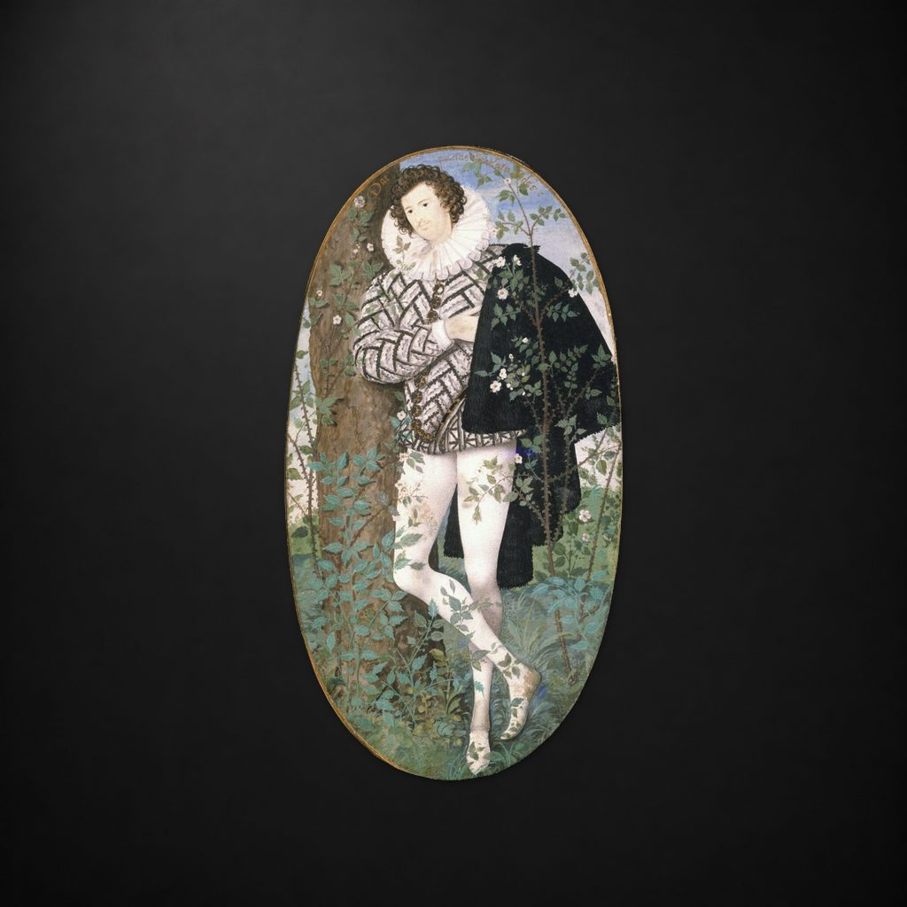

玫瑰丛中的青年
尼古拉斯·希利亚德 · 约1587年
Young Man among Roses
讲解节选
青年斜倚着树干，站在一丛玫瑰枝叶之间。他穿得很华贵，右手收在披过左肩的斗篷下面，神情却有些忧郁。
这幅《玫瑰丛中的青年》，是尼古拉斯·希利亚德约一五八七年在英国画的微型肖像。画家用水彩画在犊皮纸上，再裱到卡纸上。他受过金匠训练，后来成为伊丽莎白时代英国微型肖像的代表画家，那种精细的手艺也带进了绘画。
— 普通话讲稿 · Artvery
完整讲解约 3 分钟，在 Artvery App 里收听。粤语、台湾国语、内地普通话三种语音，馆内对准作品即可识别播放。
在 App Store 下载
App 免费下载，每座博物馆单独购买，一次购买永久使用。目前在香港、澳门、台湾、新加坡、马来西亚、英国、美国、加拿大、澳大利亚、新西兰、挪威、瑞士的 App Store 提供，暂未在中国内地上架。
作品信息
- 作者
- 尼古拉斯·希利亚德
- 年代
- 约1587年
- 主题
- 都铎与伊丽莎白时代的英国
- 馆藏编号
- P.163-1910
维多利亚与阿尔伯特博物馆参观攻略：必看名作和路线 · 维多利亚与阿尔伯特博物馆中文语音导览